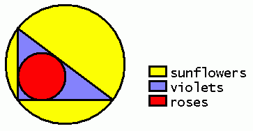

|
Problem E: Colourful Flowers |
|
Time limit: 10 seconds |
"Roses are red, violets are blue..."
Millionaire Mr Smith is well-known -- not for his wealth, but for his odd sense of "art"... Mr Smith has got a circular garden. On the boundary he picks three points and gets a triangle. He then finds the largest circle in that triangular region. So he gets something like this (Please click here for a black-and-white version of the figure):

Mr Smith then plants yellow sunflowers, blue violets and red roses in the way shown in the figure. (Nice combination, eh? :-) Given the lengths of the three sides of the triangle, you are to find the areas of the regions with each kind of flowers respectively.
Each line of input contains three integers a, b, c, the lengths of the three sides of the triangular region, with 0 < a ≤ b ≤ c ≤ 1000.
For each case, your program should output the areas of the regions with sunflowers, with violets and with roses respectively. Print your answers correct to 4 decimal places.
3 4 5
13.6350 2.8584 3.1416
{kind=link}